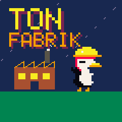
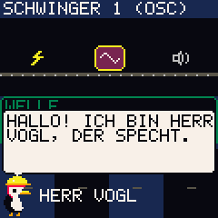
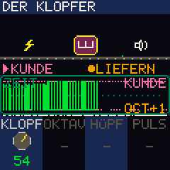
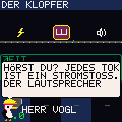
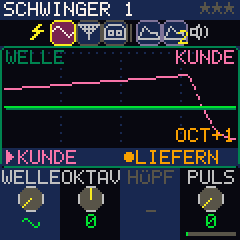
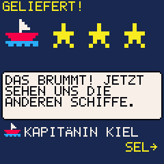
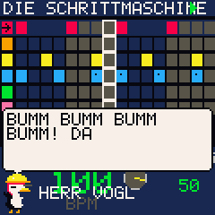
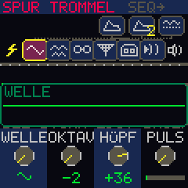
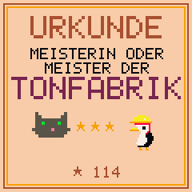

Ein Lernspiel über Synthesizer für Kinder ab 7, auf dem M-VAVE FM-1. Handbuch für Eltern, Lehrkräfte und alle, die mitspielen.
Im Browser ausprobieren · Quellcode



Das Kind erbt die Tonfabrik von Onkel Alex. Dort werden Töne aus Strom gebaut. Jede Maschine ist ein Baustein eines echten Synthesizers, und sie stehen hintereinander am Fließband, so wie im Gerät das Signal von Baustein zu Baustein läuft: Strom, Schwinger, Filter, Tor, Lautsprecher. Darüber hängen die Steuer-Maschinen (Hüllkurve, Wackler) mit Kabeln an dem, was sie bewegen.
Herr Vogl, ein Specht und Vorarbeiter, erklärt jede Maschine in kurzen Sätzen. Das Kind probiert sofort aus, was er sagt: Das Spiel wartet, bis der richtige Regler wirklich gedreht ist. Dann rufen Kundinnen und Kunden an, die einen bestimmten Ton brauchen. Man hört ihn sich an, baut ihn nach und liefert aus. Wer nach allen Kapiteln die Meisterprüfung schafft, bekommt eine Urkunde, löst im Auftrags-Modus selbständig immer neue Klangrätsel und macht im Live-Modus eigene Musik mit dem 16-Step-Sequencer.
| Kapitel | Maschine | Lernziel | Aufträge |
|---|---|---|---|
| 1 Der Klopfer | Impulsgeber | Strom macht Stöße; ab etwa 20 Stößen pro Sekunde hört man einen Ton. Frequenz, Hertz, hoch und tief, Oktave = doppelt so schnell | Wecker, Nebelhorn, Pfeife; Minispiel „Hoch oder tief?“ |
| 2 Die Wellen | Schwinger (OSC) | Sinus, Dreieck, Säge, Rechteck, Pulsbreite, Rauschen; Obertöne | Flöte, Videospielton, Sturm, Stimmgabel; „Welche Welle?“ |
| 3 Das Tor | VCA | Taste = Tor auf; Lautstärke; Verzerrung macht neue Obertöne | leise Uhr, Rockband |
| 4 Die Hüllkurve | ENV | Start, Fall, Halten, Ende (A, D, S, R); warum ein Klavier ein Schlagzeug ist | Glocke, Orgel, Geigen, Xylophon; „Spiel mir nach!“ |
| 5 Der Filter | VCF und Hüllkurve 2 | Filter als Sieb für Obertöne, Resonanz, Filter-Hüllkurve, Typen | Kuh, Geisterbahn, Teddy, Disco-Bass |
| 6 Der Wackler | LFO | Vibrato, Tremolo, Wah, Formen | Feuerwehr, Piepmatz, Biene, Ufo |
| 7 Zwei Schwinger | OSC 2, Tonsprung | Mischen, Schwebung, Trommeln aus Sinus und Rauschen | Große Trommel der Blaskapelle, kleine Trommel, Sprung-Sound, Roboter |
| 8 Echo und Hall | FX | Schall: 343 m pro Sekunde, Echo, Hall, Fledermäuse | Höhle, Dom |
| 9 Der Takt | Sequencer | 16 Schritte, 4/4-Takt, Tempo in BPM, Dur und Moll | Marsch, Schlaflied |
| 10 FM-Zauber | FM | Frequenzmodulation: der Trick, für den der FM-1 gebaut ist | Glockenspiel, E-Piano |
| 11 Meisterprüfung | alle | alles zusammen, Hilfe nur auf Nachfrage | Löwe, Münze, Meer, Rakete |



| Taste oder Regler | Was sie tut |
|---|---|
| SEL | weiter, auswählen. Herr Vogl spricht, bis SEL gedrückt wird (erster Druck: ganzer Text, zweiter: weiter). In der Werkstatt wechselt SEL das Bild zwischen WELLE und ZEIT. |
| HOME | zurück. In der Werkstatt zweimal drücken, damit nichts aus Versehen verloren geht. |
| SELECT | der große Drehregler: Maschine am Fließband wählen, in Menüs blättern |
| KNOB1 bis KNOB4 | die vier Regler der gewählten Maschine; auf dem Bildschirm unten mit Namen, Zeiger und Wert |
| ENV LFO FX EDIT | direkt zur Hüllkurve (zweimal: Hüllkurve 2), zum Wackler, zu Echo + Hall; EDIT: nächste Maschine |
| Tasten, OCT− OCT+ | den eigenen Ton spielen, Oktave wechseln |
| PLAY | beim Auftrag: den gewünschten Ton anhören; Sequencer: Start und Stopp |
| REC | beim Auftrag: ausliefern; im Live-Modus: aufnehmen, was auf den Tasten gespielt wird |
| GLO | Herr Vogl gibt einen Tipp (in der Geschichte und im Auftrags-Modus „leicht“) |
| SEQ | die Schrittmaschine; im Live-Modus zwischen den Schritten und der Fabrik der Spur |
| SAVE | im Live-Modus speichern. Auf dem Bildschirm „Wer spielt?“ 3 Sekunden halten: diesen Spielstand löschen |
| PRESETS | in der Werkstatt: Zoom des Oszilloskops. Im Zeitbild von 0,15 bis 4,8 Sekunden: hineinzoomen für kurze Teile (START, FALL, Trommeln), herauszoomen für langsame (Wackler, lange Töne). In der Welle 1 bis 8 Schwingungen: 1X zeigt die Form groß. Im Live-Modus (Schritte): Klang der Spuren FREI 1 und FREI 2 aus dem Tonlager |
| MASTER | Lautstärke |
Geschichte: 11 Kapitel, eins nach dem anderen. Jedes Kapitel kann wiederholt werden, die besten Sterne bleiben.
Aufträge (ab Kapitel 2): endlos neue Anrufe aus allen geschafften Kapiteln, jedes Mal ein wenig anders. Drei Stufen: leicht mit Oszilloskop und Tipps von Herrn Vogl, mittel nur mit Oszilloskop, schwer nur mit den Ohren. Die Punkte zählen mit.
Minispiele (ab Kapitel 1): Hoch oder tief?, Welche Welle?, Spiel mir nach!
Live (ab Kapitel 9): ein Sequencer mit 16 Schritten und sechs Spuren. Trommel, Klatsch, Zisch und Bass sind fest, die zwei freien Spuren bekommen ihren Klang aus dem Tonlager. Dort liegen Grundklänge und jeder Klang, den das Kind in einem Auftrag gebaut hat. Jede Spur hat ihre eigene Fabrik zum Umbauen.



Das Paket tonfabrik.fwsc entsteht bei jedem Push im Workflow build (Artefakt firmware).
Installiert wird es mit dem Installer von fm1-base: python3 base/tools/fm1_install.py tonfabrik.fwsc.
Die Spielstände liegen im Flash bei 0xB1000, 0xB3000 und 0xB5000, im selben Fenster wie
bei ro:MINImal, fern von Bootloader, Bluetooth-Kopplung, Update-Bereich, Werksdaten und Schlüsseln. Der Build prüft das
und bricht sonst ab.
GPL-3.0-only. Gebaut auf fm1-base und felucca-bsp (MPL-2.0). Nicht mit M-VAVE oder JieLi verbunden.